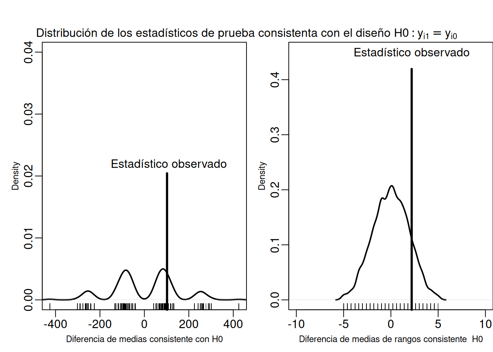
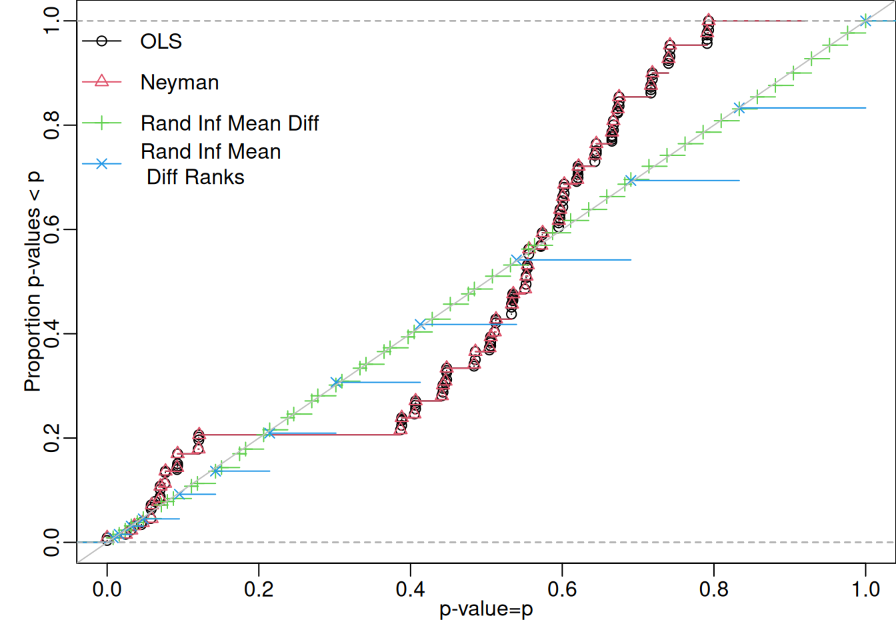

10 cosas que debe saber sobre las pruebas de hipótesis
Summary
Cuando los investigadores informan que “El efecto promedio estimado del tratamiento es 5 (p=.02)”, están usando una abreviatura para decir que los resultados experimentales no son consistentes con la idea de que el tratamiento no tuvo efectos. Esta guía explica las piezas de una prueba de hipótesis: hipótesis nulas, estadísticos de prueba, distribuciones de referencia, valores p y los errores que surgen al usar valores p para tomar decisiones.
1 Las pruebas de hipótesis resumen la información de los diseños de investigación para pensar en términos de los efectos del tratamiento
Cuando los investigadores reportan que “el efecto promedio estimado del tratamiento es de 5 (\(p = .02\)), están usando una abreviatura para decir: estimado lector, en caso de que nos pregunte si podemos distinguir la señal del ruido en este experimento usando promedios, la respuesta es: sí podemos”. Los resultados experimentales no son consistentes con la idea de que el tratamiento no tiene ningún efecto”. Se realizan pruebas de hipótesis tanto en estudios observacionales como en estudios de experimentos aleatorizados. Esta guía se centra en el uso de pruebas de hipótesis para experimentos aleatorios o diseños de investigación que utilizan los datos de tal manera que parezcan “casi aleatorios” (como diseños de regresión discontinua, otros experimentos naturales o cuasi-experimentales).
El valor \(p\) resume la capacidad de una prueba dada para distinguir la señal del ruido. Como vimos en 10 cosas que debes saber sobre el poder estadístico, que un experimento pueda detectar un efecto de tratamiento no depende sólo del tamaño del grupo experimental, sino también de la distribución de la variable de resultado1, la distribución del tratamiento y la efectividad de la propia intervención. Cuando un investigador calcula un valor de \(p\) como resultado de una prueba de hipótesis, está resumiendo todos estos aspectos de un diseño de investigación en lo que respecta a una afirmación en particular, por lo general una afirmación de que el tratamiento no tuvo ningún efecto causal.
El resto de esta guía explica las piezas de una prueba de hipótesis por partes: La hipótesis nula (la afirmación de que el tratamiento no tuvo efecto causal), la estadística de prueba que resume los datos observados (por ejemplo, una diferencia de medias), la creación de una distribución de probabilidad que permite el cálculo de un valor \(p\). También analiza la idea de rechazar (pero no aceptar) una hipótesis y busca responder la pregunta de qué constituye una buena prueba de hipótesis (pista: una prueba de hipótesis ideal debería arrojar dudas sobre la verdad rara vez y distinguir incluso las señales débiles del ruido). Consulte también 10 cosas que debe saber sobre la inferencia basada en la aleatorización para obtener más información sobre estos conceptos.
2 En un experimento, una hipótesis es una afirmación sobre relaciones causales no observadas
Hacemos experimentos para hacer comparaciones causales interpretables (Kinder and Palfrey 1993), y a menudo estimamos los efectos causales promedio. ¿En qué se relacionan las pruebas de hipótesis y la inferencia causal? En esta sección explicaremos la distinción entre evaluar afirmaciones sobre efectos causales y hacer mejores estimaciones sobre los efectos causales.
2.1 Una descripción general rápida del problema fundamental de la inferencia causal y una introducción a la notación
En 10 cosas que debe saber sobre la inferencia causal vimos que la conceptualización contrafactual de la causalidad utiliza la idea de resultados potenciales para definir la causa y formalizar lo que queremos decir cuando decimos “X causa Y” o “fumar causa cáncer” o “la información aumenta el pago de impuestos”. Aunque hay otras formas de pensar la causalidad (Brady (2008)), la idea contrafactual sugiere que imaginamos que cada persona, \(i\), pagaría sus impuestos, \(y_{i}\), si se le diera información sobre el uso que se les da a esos impuestos. Escribimos \(Z_i = 1\) para decir que estamos dando esta información a la persona \(i\) y \(Z_i = 0\) si no le estamos dando la información. Utilizamos \(y_{i, Z_i = 1}\) para indicar la cantidad de impuestos pagados por alguien que recibió la información y \(y_{i, Z_i = 0}\) para referirnos a la cantidad de impuestos pagada por alguien a quien no se le brindó ninguna información en particular. En un experimento real, podríamos aleatorizar la provisión de información a los ciudadanos para que algunas personas obtengan la información y otras no. Observamos los impuestos que pagan las personas en ambas condiciones pero, para una persona en particular solo podemos observar los impuestos que paga en una de las dos condiciones. ¿Qué queremos decir por “efecto causal”? A menudo significa que el resultado en una condición (\(y_ {i, Z_i = 1}\), o simplemente \(y_ {i, 1}\)) y el resultado en la otra condición (\(y_ {i, Z_i = 0}\) o \(y_ {i, 0}\)) difieren para una persona determinada, lo cual expresaríamos como \(y_{i, Z_i = 1} \ne y_{i, Z_i = 0}\).
No podemos observar \(y_{i, 1}\) y \(y_{i, 0}\) al mismo tiempo para cada una de las personas. Si brindamos información sobre impuestos a una persona vamos a poder observar \(y_{i, 1}\), pero no \(y_{i, 0}\). Entonces, no podemos usar la observación directa para aprender sobre este efecto causal contrafactual y solo podemos inferirlo.Holland (1986) llama a esta incapacidad de usar la observación directa para aprender acerca de la causalidad contrafactual el “problema fundamental de la inferencia causal”.
2.2 Una descripción general de los enfoques basados en estimaciones para la inferencia causal en experimentos aleatorios.
Hay tres formas principales en las que la estadística ha abordado este problema. Es decir, cuando se nos pregunta: “¿mejora la información el pago de impuestos?”, tendemos a decir: “No podemos responder directamente a esa pregunta. Sin embargo, podemos responder una pregunta relacionada”. En 10 tipos de efectos del tratamiento que debe conocer presentamos una perspectiva que acreditamos a Jerzy Neyman en la que un investigador puede estimar los efectos causales promedio en un experimento incluso si los efectos causales individuales no son observables. El trabajo de Judea Pearl sobre la estimación de la probabilidad condicional de una variable de resultado basado en un modelo causal de esa variable es similar a esta idea pero centrándose en las probabilidades condicionales de los \(y_ {i}\). Es decir, esos dos enfoques responden a la pregunta causal fundamental cambiando la forma de acercase de la pregunta a través de los promedios o de las probabilidades condicionales. Un enfoque relacionado es el de Don Rubin, el cual comienza prediciendo los resultados potenciales a nivel individual utilizando información de antecedentes y un modelo de probabilidad de \(Z_i\) (por ejemplo, \(Z \sim \text{Bernoulli} (\pi)\)) y un modelo de probabilidad de los dos resultados potenciales, por ejemplo, \((y_{i,1},y_{i,0}) \sim \text{Multivariate Normal}(\boldsymbol{\beta}\mathbf{X}, \boldsymbol{\Sigma})\) con un vector de coeficientes \(\boldsymbol{\beta}\), una matriz de covariables \(\mathbf{X}\) de tamaño \(n \times p\) (que contiene tanto la asignación de tratamiento como otras variables y una matriz de varianza-covarianza, \(\Sigma\), de tamaño \(p \times p\) que describe cómo todas las columnas en \(\mathbf{X}\) se relacionan entre sí).
El segundo enfoque comienza con modelos de probabilidad que relacionan el tratamiento, otras covariables y la variable de resultado entre sí, y los combina usando la regla de Bayes para producir distribuciones posteriores de cantidades como los efectos del tratamiento a nivel individual o el efecto promedio del tratamiento (ver (Imbens and Rubin 2007) para más información sobre lo que ellos llaman el enfoque bayesiano predictivo de la inferencia causal.) El enfoque predictivo cambia la pregunta fundamental de una sobre promedios a otra que se centra en las diferencias en las predicciones de los resultados potenciales para cada persona (aunque la mayoría de estas diferencias de predicciones individuales se resumen utilizando características de las distribuciones posteriores implícitas en los modelos de probabilidad y los datos como el promedio de las predicciones).
2.3 Las pruebas de hipótesis son un enfoque estadístico para abordar el problema fundamental de la inferencia causal utilizando afirmaciones sobre lo no observado.
El tercer enfoque de este problema vuelve a cambiar la pregunta. Fisher (1935, Capítulo 2) nos muestra que podemos hacer la pregunta fundamental sobre si existe un efecto causal para una sola persona, pero la respuesta puede ser dada solo en términos de cuánta información brindan el diseño y los datos de la investigación sobre la pregunta. Es decir, se puede plantear la hipótesis de que, para la persona \(i\), la información no produjo ninguna diferencia en la variable de resultados, de modo que \(y_{i, 1} = y_{i, 0}\) o \(y_{i, 1} = y_{i, 0} + \tau_i\) donde \(\tau_i = 0\) para todo \(i\). Sin embargo, la respuesta a esta pregunta debe ser abordada como “este diseño de investigación y conjunto de datos proporcionan una gran cantidad de información sobre este modelo, idea o hipótesis” o, como se indicó anteriormente, “este diseño de investigación no es consistente con esa afirmación”. (Ver Rosenbaum (2002)(Capítulo 2), Rosenbaum (2010b)(Capítulo 2) y Rosenbaum (2017), para obtener más detalles sobre este enfoque).
3 La hipótesis nula de no efectos es una afirmación precisa sobre los resultados potenciales
Incluso si no podemos observar directamente los efectos causales contrafactuales, nos podemos hacer preguntas sobre ellos o hacer modelos teóricos que relacionan alguna intervención o tratamiento, las características de contexto y los resultados potenciales. El modelo más simple de este tipo establece que la variable de resultado bajo el tratamiento sería la mismo que la variable de resultado para todas las unidades si están en el grupo de control; es decir, diría que independientemente de las características de contexto o de la información proporcionada en la condición experimental, cada persona pagaría el mismo monto en impuestos: \(y_ {i, 1} = y_ {i, 0}\) para todas las unidades \(i\). Para enfatizar lo tentativo y teórico de este modelo, comúnmente conocido como hipótesis, a menudo nos referimos a él como “la hipótesis nula tajante”, y lo expresamos como: \(H_0: y_{i, 1} -y{i, 0} = \tau_i\) donde \(\tau_i = 0\) para todo \(i\).
Nota: Tenga en cuenta que pensar en hipótesis precisas nos hace notar que podríamos hacer otros modelos relacionados con \(y_{i, 1}\) y \(y_{i, 0}\) en los que los resultados potenciales se relacionan de maneras que no son aditivas o lineales, y donde el efecto no necesita ser cero o incluso el mismo para todas las unidades: por ejemplo, podríamos suponer que \(\tau_i = \{5,0, -2 \}\) 5 para la unidad 1, 0 para la unidad 2 y -2 para la unidad 3 en un experimento de 3 unidades. Dése cuenta también que expresar variables de resultado de esta manera, con el resultado potencial para la unidad \(i\)sólo refiriéndose a \(i\) y no a otras unidades (\(y_ {i, Z_i}\)), es parte del modelo. Es decir, el modelo particular de \(H_0: y_{i, 1} = y_{i, 0}\) implica que el tratamiento no ha tenido ningún efecto en nadie y ningún efecto incluye ningún efecto indirecto. Podemos ser un poco más específicos escribiendo los resultados potenciales de la siguiente manera: resultado potencial de la unidad \(i\) cuando se asigna al tratamiento, y cuando todos de las otras unidades se asignan a cualquier otro conjunto de tratamientos \(\mathbf{Z}_ {~ i} = \{Z_j, Z_k, \ldots \}\) se puede escribir como \(y_{i,Z_i=1,\mathbf{Z}_{~i}}\). Vea Bowers, Fredrickson, and Panagopoulos (2013) y Bowers et al. (2018) para más información sobre la idea de que una hipótesis es un modelo teórico que se puede probar con datos provenientes de contextos en los que la hipótesis sobre la propagación de los efectos del tratamiento en una red.
4 La hipótesis nula débil de que no hay efectos es una afirmación sobre los resultados potenciales agregados
Un experimento puede influir en algunas unidades pero, en promedio, puede no tener ningún efecto. Para codificar esta intuición, podemos escribir una hipótesis nula del promedio de los resultados potenciales, o algún otra cantidad que sea un resumen agregado de los resultados potenciales, en lugar de la recopilación total de resultados potenciales.
Debido a que la mayoría de las discusiones actuales sobre los efectos causales se refieren al promedio de los efectos, expresamos a menudo la hipótesis nula débil como \(H_0: \bar {\tau} = 0\) donde \(\bar{\tau} = (1/N) \sum_{i = 1}^N \tau_i\). De nuevo, la hipótesis es una afirmación o modelo de una relación entre resultados potenciales parcialmente observados. Pero, en este caso se trata del promedio de ellos. Uno podría, en principio, articular hipótesis sobre otros agregados: medianas, percentiles, proporciones, medias recortadas, etc. Sin embargo plantear hipótesis sobre efectos promedio simplifica las matemáticas y las estadísticas: conocemos las propiedades de los promedios de observaciones independientes a medida que aumenta el tamaño de la muestra, de modo que podamos apelar al teorema del límite central para describir la distribución de promedios para grandes muestras. Esto, a su vez, hace que el cálculo de los valores de \(p\) sea rápido y fácil para muestras grandes.
5 La aleatorización nos permite usar lo que observamos para probar hipótesis sobre lo que no observamos.
Ya sea que se formule una hipótesis sobre los efectos a nivel de unidad directamente o sobre promedios de estos, todavía debemos afrontar el problema de distinguir la señal del ruido. Una hipótesis solo se refiere a posibles resultados. Además, asumiendo que no hay interacción entre las unidades, imaginamos dos resultados potenciales por persona, pero solo observamos uno por persona. ¿Cómo podemos usar lo que observamos para aprender acerca de modelos teóricos de cantidades parcialmente observadas? En este experimento simple, sabemos que observamos uno de los dos resultados potenciales por persona, según el tratamiento que se le haya asignado. Así que podemos vincular los resultados contrafactuales no observados con un resultado observado (\(Y_i\)) usando la asignación de tratamiento (\(Z_i\)) así:
\[Y_i = Z_i y_ {i, 1} + (1 - Z_i) y_ {i, 0}\]
La ecuación arriba dice que nuestro resultado observado, \(Y_i\) (en este caso, la cantidad de impuestos pagados por la persona \(i\)), es \(y_{i, 1}\) cuando la persona es asignada al grupo de tratamiento (\(Z_i = 1\)) y \(y_ {i, 0}\) cuando la persona está asignada al grupo de control.
¿Cuánta información contiene nuestro diseño de investigación y conjunto de datos sobre la hipótesis? Imagine, por ahora, la hipótesis de que el tratamiento incrementa en 5 unidades el pago de impuesto para cada persona de manera que \(H_0: y_{i, 1} = y_{i, 0} + \tau_i\) donde \(\tau_i = 5\) para todo \(i\).
Considerando este modelo, ¿qué implicaría esta hipótesis en lo que observamos? La ecuación arriba conecta lo observado con lo no observado, entonces este modelo o hipótesis implicaría que:
Lo que observamos, \(Y_i\), sería \(y_{i,0}\) si \(i\) está en el grupo de control, \(Z_i=0\) o \(\tau_i + y_{i,0}\) (que sería \(5 + y_{i,0}\) en el grupo de tratamiento).
Esta hipótesis también implica que \(y_{i,0} = Y_i - Z_i \tau_i\) o \(y_{i,0} = Y_i - Z_i 5\). Si restáramos 5 de cada respuesta observada en el grupo de control, nuestra hipótesis implicaría que observaríamos \(y_{i,0}\) para todas las unidades. Esto quiere decir que al restar 5 estaríamos haciendo que los grupos de tratamiento y control tengan valores equivalente en la variable de resultado. Con esta lógica tenemos una implicación observable de la hipótesis
La hipótesis nula tajante de que no hay ningún efecto especifica que \(\tau_i = 0\) para todo \(i\). Y esto a su vez implica que \(y_{i, 0} = Y_i - Z_i \tau_i = Y_i\). Es decir, implica que lo que observamos, \(Y_i\), es lo que observaríamos si cada unidad fuera asignada a la condición de control. Y la implicación, entonces, es que no deberíamos ver diferencias entre los grupos de tratamiento y control en los los resultados observables.
La hipótesis nula débil de ningún efecto especifica que \(\bar{\tau} = \bar{y}_{1} - \bar{y} _0 =0\), y podemos escribir una igualdad similar que vincule el promedio de los resultados potenciales no observados con el promedio de los resultados observados en diferentes condiciones de tratamiento.
6 Las estadísticas de pruebas resumen la relación entre los resultados observados y la asignación al tratamiento.
Dada una hipótesis y una función que conecte los resultados no observados con los observados, el siguiente paso en una prueba de hipótesis es definir una estadística de prueba. Una estadística de prueba resume la relación entre el tratamiento y los resultados observados en una sola cantidad. En general, nos gustaría que nuestras estadísticas de prueba tomaran valores más grandes en cuanto mayor sea el efecto del tratamiento. En el siguiente código podemos ver ejemplos de dos pruebas de este tipo de estadísticas utilizando un experimento con 10 unidades aleatorizadas en dos grupos (presione el botón “Code” para ver el código R).
Code
## Primero, creémos datos falsos## y0 es el resultado potencial de las unidades en el grupo controlN <-10y0 <-c(0,0,0,0,1,1,4,5,400,500)## Diferentes efectos de tratamiento a nivel individual##tau <- c(1,3,2,10,1,2,3,5,1,1)*sd(y0)set.seed(12345)tau <-round(rnorm(N,mean=sd(y0),sd=2*(sd(y0)))) ##c(10,30,200,90,10,20,30,40,90,20)tau <- tau*(tau>0)## y1 es el resultado potencial del tratamientoy1 <- y0 + tau#sd(y0)#mean(y1)-mean(y0)# mean(tau)## Z es la asignación al tratamientoset.seed(12345)Z <-complete_ra(N)## Y es la variable de resultado observadaY <- Z*y1 + (1-Z)*y0## Los datosdat <-data.frame(Y=Y,Z=Z,y0=y0,tau=tau,y1=y1)#(mean(y1) - mean(y0))/sd(y0)#dat#pvalue(oneway_test(Y~factor(Z),data=dat,distribution=exact(),alternative="less"))#pvalue(wilcox_test(Y~factor(Z),data=dat,distribution=exact(),alternative="less"))#pvalue(oneway_test(Y~factor(Z),data=dat,distribution=exact(),alternative="greater"))#pvalue(wilcox_test(Y~factor(Z),data=dat,distribution=exact(),alternative="greater"))## The mean difference test statisticmeanTZ <-function(ys,z){mean(ys[z==1]) -mean(ys[z==0])}## La estadística de prueba de diferencia de medias de rangosmeanrankTZ <-function(ys,z){ ranky <-rank(ys)mean(ranky[z==1]) -mean(ranky[z==0])}observedMeanTZ <-meanTZ(ys=Y,z=Z)observedMeanRankTZ <-meanrankTZ(ys=Y,z=Z)
La primera estadística de prueba es la diferencia de medias (meanTZ) y devuelve un valor observado de 102 y la segunda es la diferencia media de los resultados transformados por rangos (meanrankTZ), que devuelve un valor de 2.2. También se podrían utilizar versiones de estas estadísticas de prueba estandarizadas de acuerdo con el error estándar estimado (consulte Chung, Romano, et al. (2013) para leer más acerca de las ventajas de esta prueba estadística). Para probar la hipótesis nula tajante de que no hay efectos se puede elegir casi cualquier estadística de prueba de modo que los valores de esa función aumenten a medida que aumenta la diferencia entre los resultados tratados y de control (ver Rosenbaum (2002), Capítulo 2, para una discusión de las estadísticas de prueba de “efecto aumentado”).
La prueba de hipótesis nula débil de que no hay ningún efecto utiliza la diferencia de medias (quizás estandarizada o “studentizadas”) como estadística de prueba.
7 Los valores \(p\) codifican cuánta información obtenemos de un diseño de investigación y una estadística de prueba sobre la hipótesis. Las pruebas de hipótesis requieren distribuciones del estadístico de prueba según la hipótesis.
Una vez tenemos una afirmación sobre los posibles resultados del experimento (es decir, una hipótesis) y una forma de resumir los datos observados en relación con la hipótesis (es decir, una prueba estadística que debería aumentar a medida que los resultados difieran de la hipótesis tal como se explicó anteriormente), queremos ir más allá de la descripción de los datos observados para saber cuánta variación esperaríamos ver en la estadística de prueba dado el diseño de la investigación y teniendo en cuenta la hipótesis (volviendo al tema de la señal y ruido).
Qué tanta evidencia tenemos sobre una hipótesis dependerá del diseño del estudio. Por ejemplo, un experimento grande debería tener más información sobre una hipótesis que uno pequeño. Entonces, ¿qué queremos decir con evidencia en contra de la hipótesis? ¿Cómo formalizaríamos o resumiríamos esta evidencia para que los experimentos grandes tiendan a revelar más y los pequeños tiendan a revelar menos información?
Una respuesta a esta pregunta es hacer el experimento mental de repetir el estudio. Imagínese, en virtud de nuestro argumento, que la hipótesis era correcta. Si repetimos el estudio y calculamos la estadística de prueba, recibiríamos un número, este número reflejaría el resultado del experimento bajo la hipótesis. Ahora, imagine repetir este experimento hipotético muchas veces, recalculando la estadística de prueba cada vez. La distribución de la prueba estadística representaría todas las estadísticas de prueba que podrían haber ocurrido si la hipótesis nula fuera cierta. Si la estadística de prueba es una suma o media, sabemos que en un experimento grande la distribución de esos números se concentrará más de cerca alrededor del valor focal hipotético (digamos, \(t(Z, y_0)\)) que en un experimento pequeño.
Cuando comparamos lo que realmente observamos, \(t (z, Y)\), con la distribución de lo que pudimos haber observado bajo la hipótesis nula, aprendemos que nuestro estudio es un caso típico o atípico dada la hipótesis nula. Y codificamos esta tipicidad o valor extremo con un valor \(p\).
Tenga en cuenta que el valor \(p\) no nos brinda información acerca de la probabilidad asociada a los datos observados. Se observan los datos. Surge la probabilidad de la repetición hipotética, pero posible, del experimento en sí, la prueba estadística y la hipótesis. El valor de \(p\) de una cola es la probabilidad de ver un valor de nuestra estadística de prueba tan mayor o igual que el valor observado en el caso de que nuestra hipótesis sea cierta.
7.1 Un ejemplo: prueba de hipótesis nula tajante de que no hay ningún efecto
Probemos la hipótesis nula de que no hay ningún efecto. En el caso del experimento ejemplo, el tratamiento se asignó exactamente a 5 observaciones de 10 completamente al azar. Para repetir esa operación, solo necesitamos permutar o barajar el vector \(Z\) dado (puede ver el código haciendo clic en “Code”).
Code
repeatExperiment <-function(Z){sample(Z)}
Ya sabemos que \(H_0: y_{i, 1} = y_{i, 0}\) implica que \(Y_i = y_{i, 0}\). Entonces, podemos describir todas las formas en que el experimento puede ocurrir bajo la hipótesis nula simplemente repitiendo el experimento (es decir, reasignando el tratamiento) y recalculando la estadística de prueba cada vez. El siguiente código reasigna repetidamente el tratamiento de acuerdo al diseño y calcula la estadística de prueba en cada iteración.
Y estos gráficos muestran las distribuciones de las dos estadísticas de prueba diferentes que emergerían del mundo en el que la hipótesis nula es cierta (las curvas y lineas cortas en la parte inferior de las gráficas). Las gráficas también muestran los valores observados para las estadísticas de prueba que podemos usar para comparar lo que observamos (las líneas gruesas y largas) con lo que hipotetizamos (las distribuciones).
par(mfrow=c(1,2),mgp=c(1.5,.5,0),mar=c(3,3,0,0),oma=c(0,0,3,0))plot(density(possibleMeanDiffsH0),ylim=c(0,.04),xlim=range(possibleMeanDiffsH0),lwd=2,main="",#Mean Difference Test Statistic",xlab="Diferencia de medias consistente con H0",cex.lab=0.75)rug(possibleMeanDiffsH0)rug(observedMeanTZ,lwd=3,ticksize = .51)text(observedMeanTZ+8,.022,"Estadístico observado")plot(density(possibleMeanRankDiffsH0),lwd=2,ylim=c(0,.45),xlim=c(-10,10), #range(possibleMeanDiffsH0),main="", #Mean Difference of Ranks Test Statistic",xlab="Diferencia de medias de rangos consistente H0",cex.lab=0.75)rug(possibleMeanRankDiffsH0)rug(observedMeanRankTZ,lwd=3,ticksize = .9)text(observedMeanRankTZ,.45,"Estadístico observado")mtext(side=3,outer=TRUE,text=expression(paste("Distribución de los estadísticos de prueba consistenta con el diseño ",H0: y[i1]==y[i0])))

Ejemplo del uso del diseño del experimento para probar una hipótesis.
Para formalizar la comparación entre lo observado y lo hipotético, podemos calcular la proporción de los experimentos hipotéticos que arrojan estadísticas de prueba mayores que el experimento observado. En el panel izquierdo de la figura vemos que una amplia gama de diferencias de medias entre los grupos tratados y de control son compatibles con el tratamiento sin efectos (con el rango general entre -425.6 y 425.6). El panel de la derecha muestra que la transformación de los resultados por rango antes de tomar la diferencia de medias reduce el rango de las estadísticas de la prueba, después de que todos los rango pasen de 1 a 10 en lugar de 1 a 280.
7.1.1 Valores \(p\) de una cola
Los valores \(p\) de una cola son 0.2034 para la diferencia media simple y 0.15 para la diferencia media de los resultados transformados por rango. Cada estadística de prueba arroja una cantidad diferente de duda, o cuantifica una cantidad diferente inesperada sobre la misma hipótesis nula de que no hay ningún efecto. El resultado en sí es tan ruidoso que la diferencia media de los resultados transformados por rango hace un mejor trabajo al captar la señal que la simple diferencia de medias. Estos datos se generaron incluyendo efectos del tratamiento, por lo que la hipótesis nula de ningún efecto es falsa, pero la información sobre los efectos es ruidosa: el tamaño de la muestra es pequeño y la distribución de la variable de resultado tiene algunos puntos y tratamientos atípicos y los efectos en sí varían mucho.
7.1.2 Valores \(p\) de dos colas
Supongamos que no sabemos de antemano si nuestro experimento mostrará un efecto negativo o positivo. Podemos hacer dos pruebas de hipótesis: una calculando el valor \(p\) superior de una cola y la otra calculando el valor \(p\) inferior de una cola. Ahora bien, si hiciéramos esto, estaríamos calculando dos valores de \(p\) y, si hiciéramos una práctica estándar de esto, correríamos el riesgo de engañarnos a nosotros mismos. Después de todo, recuerde de las 10 cosas sobre las comparaciones múltiples que incluso si realmente no hay ningún efecto, 100 pruebas de hipótesis de que no hay ningún efecto que sean independientes y que operen bien arrojarán no más de 5 valores \(p\) menores que .05. Una solución fácil al reto de resumir un valor extremo de un experimento en cualquier dirección en lugar de centrarse únicamente en mayor o menor que, es calcular un valor \(p\) de dos colas. Este, por cierto, es el valor estándar de \(p\) producido por la mayoría de funciones de R como lm () y t.test () y wilcox.test (). La idea básica es calcular ambos valores \(p\) y luego multiplicar el valor \(p\) más pequeño por 2. (La idea es que se está penalizando por hacer dos pruebas; consulte Rosenbaum (2010a), capítulo 2 y Cox et al. (1977) si quiere más información sobre esta penalización por hacer dos pruebas).
Code
## Aquí usamos <= y >= en vez de < and > porque la distribución aleatoría es discreta## con solo 10 observaciones. Ver discusiones sobre## el "mid-p-value"p2SidedMeanTZ <-2*min( mean( possibleMeanDiffsH0 >= observedMeanTZ ),mean( possibleMeanDiffsH0 <= observedMeanTZ ))p2SidedMeanRankTZ <-2*min( mean( possibleMeanRankDiffsH0 >= observedMeanRankTZ ),mean( possibleMeanRankDiffsH0 <= observedMeanRankTZ ))
En este caso, los valores \(p\) de dos colas son 0.4068 y 0.296 para las diferencias de medias simples y las diferencias de medias basada en rango, respectivamente. Los interpretamos en términos de “extremos”: solo veríamos una diferencia media observada tan alejada de cero como la que se manifiesta en nuestros resultados aproximadamente el 18% de las veces, por ejemplo.
Como nota al margen: La prueba de hipótesis nula tajante que se muestra aquí se puede realizar sin que tenga que escribir el código usted mismo. El código que verá aquí (haciendo clic en Code) muestra cómo usar diferentes paquetes R para probar una hipótesis usando inferencia basada en la aleatorización (randomization inference).
Code
## usando el paquete coinlibrary(coin)set.seed(12345)pMean2 <-pvalue(oneway_test(Y~factor(Z),data=dat,distribution=approximate(nresample=1000)))dat$rankY <-rank(dat$Y)pMeanRank2 <-pvalue(oneway_test(rankY~factor(Z),data=dat,distribution=approximate(nresample=1000)))pMean2pMeanRank2## usando la versión en desarrollo del paquete RItoolslibrary(devtools)# dir.create(here("R-dev"))# dev_mode(on = TRUE,path=here("R-dev"))# renv::install("dgof")# renv::install("hexbin")# renv::install("kSamples")# renv::install("ddst")# install_github("markmfredrickson/RItools@randomization-distribution")library(RItools)thedesignA <-simpleRandomSampler(total=N,z=dat$Z,b=rep(1,N))pMean4 <-RItest(y=dat$Y,z=dat$Z,samples=1000, test.stat= meanTZ ,sampler = thedesignA)pMeanRank4 <-RItest(y=dat$Y,z=dat$Z,samples=1000, test.stat= meanrankTZ ,sampler = thedesignA)pMean4pMeanRank4# dev_mode(on=FALSE,path=here("R-dev"))
Code
## utilizando el paquete ri2library(ri2)thedesign <-declare_ra(N=N)pMean4 <-conduct_ri( Y ~ Z, declaration = thedesign,sharp_hypothesis =0, data = dat, sims =1000)summary(pMean4)pMeanRank4 <-conduct_ri( rankY ~ Z, declaration = thedesign,sharp_hypothesis =0, data = dat, sims =1000)summary(pMeanRank4)
7.2 Ejemplo: Prueba de hipótesis nula débil de que no hay ningún efecto promedio
La hipótesis nula débil es una afirmación sobre agregados, y casi siempre es expresada en términos de promedios: \(H_0: \bar {y} _ {1} = \bar {y} _ {0}\) La estadística para esta hipótesis casi siempre es la diferencia de medias (es decir, meanTZ() arriba. El siguiente código muestra el uso de mínimos cuadrados (lm() en R) con el fin de calcular las diferencias de medias como un estadístico de prueba para hipótesis sobre efectos medios. Observe que los valores de \(p\) basados en MCO difieren de los calculados por t.test() y difference_of_means(). Recuerde que la inferencia estadística de MCO se justifica por el supuesto de observaciones distribuidas de forma idéntica, sin embargo, en la mayoría de los experimentos, el tratamiento en sí cambia la variación en el grupo de tratamiento (por lo tanto violando el supuesto de distribución idéntica / homocedasticidad de MCO). Esta es una de las pocas razones por las que la mejor práctica al probar la hipótesis nula débil de que no hay efectos de tratamiento promedio usa herramientas distintas de las proporcionadas por simples funciones integradas de MCO.
Este código produce los mismos resultados sin usar mínimos cuadrados. Después de todo, solo estamos calculando las diferencias de medias y las variaciones de estas tal y como podrían variar a través de experimentos repetidos en el mismo grupo de unidades experimentales.
Observe que todas estas pruebas asumen que la distribución de la estadística de prueba a través de experimentos repetidos estaría bien caracterizada por una distribución \(t\). El panel de la izquierda en la figura presentada arriba muestra la distribución realizada “en un sentido” para que la hipótesis nula débil sea verdadea (es decir, si la hipótesis nula tajante es verdadera): hay muchas formas para que la hipótesis nula débil sea verdadera, algunas de las cuales son compatibles con efectos positivos grandes para algunas unidades y efectos negativos grandes para otras unidades, otros son compatibles con otros patrones de efectos de nivel individual. Sin embargo, en este pequeño conjunto de datos en particular, diseñado para tener una distribución de resultados muy sesgada, ninguno de esos patrones producirá una distribución de referencia que parezca una curva Normal o \(t\) si la diferencia de medias se utiliza como estadística de prueba. Volveremos sobre este punto más adelante cuando analicemos las características que una buena prueba debe tener, una de las cuales es una tasa controlada de falsos positivos.
8 No hablamos de aceptar hipótesis nulas en pruebas de hipótesis simples
Algunos buscan a veces utilizar un valor \(p\) para la toma de decisiones. Recuerde que un valor \(p\) usa una estadística de prueba y la idea de repetir el experimento para cuantificar la información del diseño de investigación sobre una hipótesis. Es el diseño, la función estadística de prueba y la hipótesis lo que genera una distribución de probabilidad. Y es la función de estadística de prueba, el diseño y los datos reales lo que crea un único valor observado.
El valor \(p\) simplemente nos dice qué tan extremo es el resultado observado desde la perspectiva de la hipótesis. O podemos pensar que el valor \(p\) codifica la inconsistencia entre nuestros datos observados y la hipótesis. ¿Y si queremos tomar una decisión? Podemos tomar decisiones usando un valor \(p\) si estamos dispuestos a aceptar una cierta cantidad de error. Digamos, por ejemplo, que vemos un \(p = .01\) de una cola: esto significaría que en solo 1 de cada 100 experimentos hipotéticos que representan la hipótesis nula, veríamos un resultado tan o más grande que nuestro resultado real. Podríamos estar tentados a decir que nuestro resultado observado es tan extraño que podemos asumir que la hipótesis nula es falsa. Eso estaría bien — después de todo, un valor de \(p\) por sí solo no puede controlar el comportamiento de un persona adulta — pero la persona debe saber que en 1/100 de los casos en los que el valor nulo es verdadero, todavía veríamos este resultado en este mismo grupo de sujetos con este mismo diseño experimental. Es decir, si usamos un valor \(p\) pequeño para rechazar el nulo, o si asumimos que la hipótesis nula es falsa, aún podríamos estar cometiendo un error. Estos rechazos incorrectos a veces se denominan errores de falsos positivos porque la hipótesis nula suele ser cero y el efecto deseado (por ejemplo, en los ensayos médicos) se codifica con frecuencia como positivo.
Digamos que estaríamos satisfechos si solo cometemos 1 error falso positivo o falso rechazo en cada 20 experimentos. En ese caso, también deberíamos estar satisfechos de rechazar una hipótesis nula si viéramos un \(p \le 1/20\) o \(p \le .05\). Y diríamos que los valores \(p\) menores que .05 son señales de inconsistencia con la hipótesis nula y, por lo tanto, solo deberían llevarnos a errar en un 5% de experimentos como el que estamos analizando.
8.1 ¿Qué significa rechazar una hipótesis nula?
Como puede darse cuenta \(p = .01\) solo refleja el extremo de los datos observados en comparación con la hipótesis. Esto quiere decir que la estadística de prueba observada parece extrema desde la perspectiva de la distribución de la estadística de prueba que se genera dada la hipótesis nula y diseño de investigación. Entonces esperamos que \(p = .01\) (y otros valores pequeños de \(p\)) nos hagan dudar si la hipótesis específica es un buen modelo de los datos observados. A menudo, el único modelo de resultados potenciales que se prueba es el modelo sin efectos, por lo que un valor pequeño de \(p\) debería hacernos dudar del modelo sin efectos. El valor \(p\) que las funciones predeterminadas de los software estadísticos tienden a mostrar está relacionado con esta hipótesis nula de no efectos, por lo que incluso si solo se quiere obtener las diferencias de medias de los datos utilizando mínimos cuadrados como su calculadora de diferencia de medias, las funciones mostrarán el valor \(p\).
8.2 ¿Qué significa no rechazar una hipótesis nula?
Como puede darse cuenta \(p = .50\) solo refleja el extremo de los datos observados en relación a la hipótesis, pero los datos observados en este caso, no parecen extremos sino comunes desde la perspectiva de la hipótesis nula. Entonces, \(p = .50\) (y otros valores \(p\) grandes) no arrojan dudas sobre el modelo de la hipótesis nula. No nos lleva a aceptar ese modelo; después de todo, es solo un modelo. No sabemos cuál sería el modelo a priori, por ejemplo. Entonces, un valor \(p\) grande es un argumento a favor de la hipótesis nula, pero no uno muy bueno.
9 Una vez que estemos usando valores \(p\) para rechazar una hipótesis, cometeremos errores
Una buena prueba rechaza las hipótesis verdaderas en raras ocasiones (es decir, tiene una tasa de error de falsos positivos controlada) y detecta fácilmente la señal del ruido (es decir, tiene un buen poder estadístico, rara vez comete el error de perder la señal en el ruido).
9.1 ¿Cómo aprender sobre los errores de perder la señal en el ruido?
La guia 10 cosas que debe saber sobre el poder estadístico explica de qué forma esperamos que las pruebas rechacen falsas hipótesis nulas (es decir, detectar señal de ruido). Cuando pensamos en el poder de las pruebas estadísticas, es necesario considerar la hipótesis alternativa. Sin embargo, como hemos demostrado anteriormente, podemos probar hipótesis nulas sin la idea de rechazar o aceptarlas, aunque entonces el “poder” de una prueba es más difícil de definir y trabajar.
9.2 ¿Cómo aprender sobre errores de falsos positivos?
La simulación es la forma más sencilla para aprender sobre errores de falsos positivos. Primero, creamos una versión del mundo en la que la hipótesis nula es cierta y conocida, y luego hacemos pruebas de esa hipótesis nula bajo las muchas formas en las que es posible que no sea cierta. Por ejemplo, en el ejemplo del experimento en el que tenemos 5 de 10 unidades asignadas al tratamiento. Esto significa que hay \(\binom {10} {5} = 252\) formas diferentes de asignar el tratamiento y 252 formas en las que el experimento no tiene efectos en los individuos.
Aquí presentamos el caso en el que la hipótesis nula tajante o estricta es cero, pero también se podría evaluar la tasa de falsos positivos para diferentes hipótesis. A continuación comparamos las tasas de error para algunos de los enfoques presentados hasta ahora, incluida la prueba de la hipóstesis nula débil de no efectos. La siguiente gráfica muestra la proporción de valores de \(p\) menores que cualquier nivel dado de significancia (es decir, umbral de rechazo) para cada una de las cuatro pruebas. Es decir, este es un gráfico de tasas de falsos positivos para cualquier umbral de significancia dado. Una prueba que tiene una tasa de falsos positivos controlada o conocida tendría marcadores en o debajo de la línea en todo el eje X o rango de la gráfica. Como podemos ver aquí, las dos pruebas que utilizan permutaciones de tratamiento para evaluar la hipótesis nula tajante de no efectos tienen esta característica. Las pruebas de hipótesis nula débil que utilizan el estadístico de prueba de diferencia de medias y apelan a la teoría de muestras grandes para justificar el uso de una distribución \(t\) no tienen una tasa de falsos positivos controlada: la proporción de valores de \(p\) por debajo de cualquier valor dado. El umbral de rechazo puede ser demasiado alto o demasiado bajo.
Code
collectPValues <-function(y,z){## Hace que Y y Z no tengan relación aleatorizando Z de nuevo newz <-repeatExperiment(z) thelm <-lm(y~newz,data=dat) ttestP2 <-difference_in_means(y~newz,data=dat) owP <-pvalue(oneway_test(y~factor(newz),distribution=exact())) ranky <-rank(y) owRankP <-pvalue(oneway_test(ranky~factor(newz),distribution=exact()))return(c(lmp=summary(thelm)$coef["newz","Pr(>|t|)"],neyp=ttestP2$p.value[[1]],rtp=owP,rtpRank=owRankP))}
par(mfrow=c(1,1),mgp=c(1.25,.5,0),oma=rep(0,4),mar=c(3,3,0,0))plot(c(0,1),c(0,1),type="n",xlab="p-value=p",ylab="Proportion p-values < p")for(i in1:nrow(pDist)){lines(ecdf(pDist[i,]),pch=i,col=i)}abline(0,1,col="gray")legend("topleft",legend=c("OLS","Neyman","Rand Inf Mean Diff","Rand Inf Mean \n Diff Ranks"),pch=1:5,col=1:5,lty=1,bty="n")

En este caso particular, en el umbral de \(\alpha = .05\), todas las pruebas excepto para la prueba basada en rangos reportan una tasa de falsos positivos inferior al 5%. Esto es un buen indicador; debería ser un 5% o menos. Sin embargo, para los experimentos con un \(N\) pequeño un buen resultado en las pruebas basadas en muestras grandes no es garantía de nada. Lo mismo pasa con experimentos en los que la distribución de la variable de resultado es muy asimétrica, etc … En caso de duda, puede evaluar la tasa de falsos positivos de una prueba utilizando el código presentado en esta guía para hacer su propia simulación.
Code
apply(pDist,1,function(x){ mean(x<.05)})
lmp neyp rtp rtpRank
0.0378 0.0378 0.0456 0.0450
10 Qué más saber sobre las pruebas de hipótesis.
Aquí enumeramos algunos otros temas importantes pero avanzados relacionados con la hipótesis. pruebas:
Incluso si un procedimiento de prueba determinada controla la tasa de falsos positivos para una sola prueba, puede que no controle la tasa para un conjunto de múltiples pruebas. Consulte 10 cosas que necesita saber sobre comparaciones múltiples para aprender más sobre los enfoques para controlar tales tasas de rechazo en pruebas múltiples.
Un intervalo de confianza de \(100\alpha\)% se puede definir como el rango de una hipótesis donde todos los valores de \(p\) son mayores o iguales que \(\alpha\). A esto se le llama invertir la prueba de hipótesis. (Rosenbaum (2010a)). Es decir, un intervalo de confianza es una colección de pruebas de hipótesis. Esto significa que valores críticos de \(p\) también son críticos para los intervalos de confianza.
Una estimación puntual basada en pruebas de hipótesis se denomina estimación puntual de Hodges-Lehmann. (Rosenbaum (1993), Hodges and Lehmann (1963))
Un conjunto de pruebas de hipótesis se puede combinar en una sola prueba de hipótesis. Por ejemplo, puede probar la hipótesis de un efecto de tamaño 1 en el resultado 1, un efecto de tamaño 0 en el resultado 2 y un efecto de -10 en el resultado 3. (Hansen and Bowers (2008), Caughey, Dafoe, and Seawright (2017))
En las pruebas de equivalencia, se puede plantear la hipótesis de que dos estadísticas de prueba sean equivalentes (es decir, el grupo de tratamiento es el mismo que el grupo de control) en lugar de solo una estadística de prueba (la diferencia entre dos grupos es cero) (Hartman and Hidalgo (2018))
Dado que una prueba de hipótesis es un modelo de resultados potenciales, se puede usar la prueba de hipótesis para aprender sobre modelos complejos, como los modelos de derrame y propagación de los efectos del tratamiento a través de redes (Bowers, Fredrickson, and Panagopoulos (2013), Bowers, Fredrickson, and Aronow (2016), Bowers et al. (2018)).
Bowers, Jake, Bruce A Desmarais, Mark Frederickson, Nahomi Ichino, Hsuan-Wei Lee, and Simi Wang. 2018. “Models, Methods and Network Topology: Experimental Design for the Study of Interference.”Social Networks 54: 196–208.
Bowers, Jake, Mark M Fredrickson, and Costas Panagopoulos. 2013. “Reasoning about Interference Between Units: A General Framework.”Political Analysis 21 (1): 97–124.
Bowers, Jake, Mark Fredrickson, and Peter M Aronow. 2016. “Research Note: A More Powerful Test Statistic for Reasoning about Interference Between Units.”Political Analysis 24 (3): 395–403.
Brady, Henry E. 2008. “Causation and Explanation in Social Science.” In The Oxford Handbook of Political Methodology (Oxford Handbooks of Political Science).
Caughey, Devin, Allan Dafoe, and Jason Seawright. 2017. “Nonparametric Combination (NPC): A Framework for Testing Elaborate Theories.”The Journal of Politics 79 (2): 688–701.
Chung, EunYi, Joseph P Romano, et al. 2013. “Exact and Asymptotically Robust Permutation Tests.”The Annals of Statistics 41 (2): 484–507.
Cox, DR, W. R. van Zwet, JF Bithell, O. Barndorff-Nielsen, and M. Keuls. 1977. “The Role of Significance Tests [with Discussion and Reply].”Scandinavian Journal of Statistics 4 (2): 49–70.
Fisher, R. A. 1935. The design of experiments. 1935. Oliver & Boyd Edinburgh, Scotland. Edinburgh: Oliver; Boyd.
Hansen, Ben B., and Jake Bowers. 2008. “Covariate Balance in Simple, Stratified and Clustered Comparative Studies.”Statistical Science 23 (2): 219–36.
Hartman, Erin, and F Daniel Hidalgo. 2018. “An Equivalence Approach to Balance and Placebo Tests.”American Journal of Political Science 62 (4): 1000–1013.
Hodges, J. L., and E. L. Lehmann. 1963. “Estimates of location based on rank tests.”Ann. Math. Statist 34: 598–611.
Holland, Paul W. 1986. “Statistics and causal inference.”Journal of the American Statistical Association 81 (396): 945–60.
Imbens, G., and D. Rubin. 2007. “Causal Inference: Statistical Methods for Estimating Causal Effects in Biomedical, Social, and Behavioral Sciences.” Cambridge University Press, forthcoming.
Kinder, D. R., and T. R. Palfrey. 1993. “On Behalf of an Experimental Political Science.”Experimental Foundations of Political Science, 1–39.
Rosenbaum, Paul R. 1993. “Hodges-Lehmann Point Estimates of Treatment Effect in Observational Studies.”Journal of the American Statistical Association 88 (424): 1250–53.
———. 2002. “Attributing Effects to Treatment in Matched Observational Studies.”Journal of the American Statistical Association 97: 183–92.
———. 2010a. Design of Observational Studies. Springer Series in Statistics. New York, NY: Springer.
———. 2010b. “Design Sensitivity and Efficiency in Observational Studies.”Journal of the American Statistical Association 105: 692–702.
———. 2017. Observation and Experiment: An Introduction to Causal Inference. Harvard University Press.
Footnotes
Los resultados con valores atípicos grandes añaden ruido, los resultados que son en su mayoría 0 tienen poca señal. Los bloques, pre-estratificación o ajuste de covarianza pueden reducir el ruido.↩︎